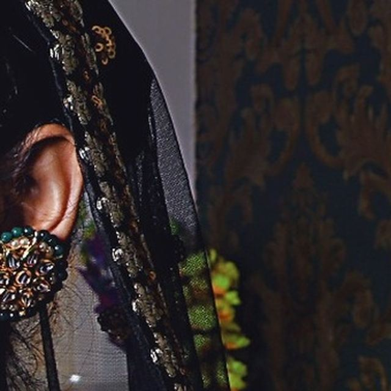
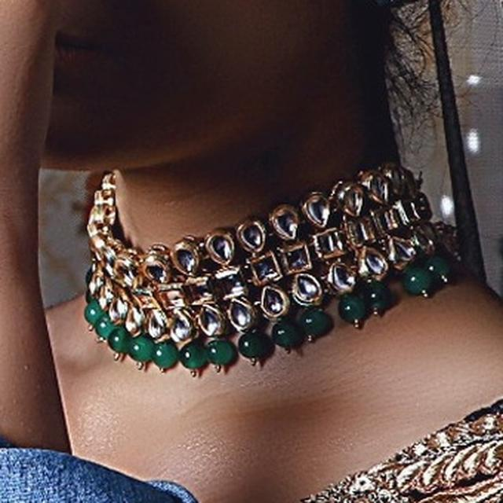
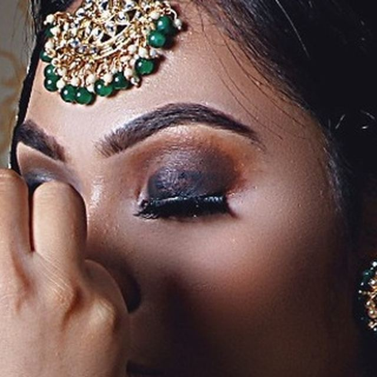
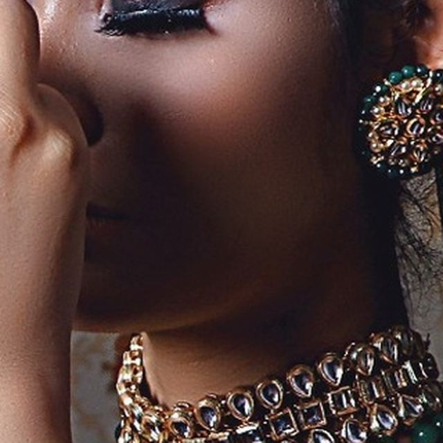

Scroll
Four decisions, made in order, each one constraining the next. Most salons know this by heart and have no way to show it.
Four stages, stacked in the order they happen. Take one to see it up close.



